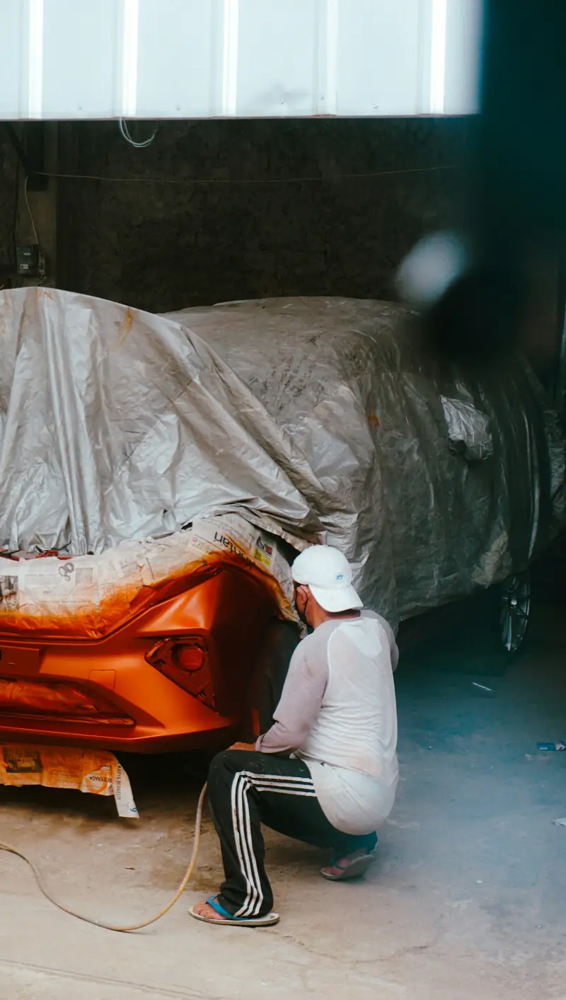

Group 01 / 02
Repair and Refinish
These services restore damaged or worn paint to its original colour and gloss.
5 servicesObsidian Black is not just black. Selenite Grey shifts with the light. Every Mercedes colour is a precise recipe, and Abu Dhabi’s sun is hard on all of them. We match your paint by code, blend it panel to panel and finish it to last.

Small paint faults grow fast in strong sun and sand. Here is what common damage usually means.
Likely causeCar wash scratches in the clear coat
Paint correction and polishingLikely causeStones and sand at highway speed
Chip repair or bumper paintingLikely causeUV oxidation of the clear coat
Panel repaint if polishing can’t restore itLikely causeClear coat failure from long sun exposure
Panel repaint down to sound paintLikely causeMoisture or corrosion underneath
Strip, treat and repaintLikely causeEarlier poor-quality repair
Repaint with proper blendingFrom a quick touch-up to a complete new colour, every job follows the same factory-level standards.
These services restore damaged or worn paint to its original colour and gloss.
5 servicesHighway sand and stones chip bonnets and bumpers fast. We fill and level each chip, then colour match it to your paint code. Small scratches are often fixed without repainting the whole panel.
Ask about thisBumpers take most parking scuffs and chips. We repair cracks, prime the plastic with flexible additives and paint it to match. Parking sensors are refitted and tested before handover.
Ask about thisWhen one panel is damaged, we repaint it and blend the colour into the panels beside it. This avoids the visible line you see on cheaper repairs. Door edges and jambs are finished to match.
Ask about thisA full respray suits cars with widespread fading, peeling or many old repairs. We remove trim, sand to a sound base and apply primer, basecoat and clear coat. Your car leaves with an even, factory-like finish.
Ask about thisSwirls and light scratches often sit only in the clear coat. We measure its thickness first, then machine polish to remove defects. This restores gloss while keeping as much clear coat as possible.
Ask about this
These services change or upgrade the look of your Mercedes while protecting the finish.
5 servicesWe change your Mercedes colour with full respray quality, including door jambs where requested. Abu Dhabi rules require police approval first, and you can apply through TAMM. We guide you through the permit before work starts.
Ask about thisMercedes designo and magno matte paints need special handling. Matte clear coat can’t be polished like gloss paint, so we repaint affected panels with the correct matte system to keep the finish even.
Ask about thisPainted calipers add a sharp accent behind your wheels. We strip, clean and mask each caliper, then apply heat-resistant paint built for brake temperatures. Popular choices include AMG red, yellow and silver.
Ask about thisKerbed or faded rims spoil the look of any Mercedes. We repair kerb damage, prime and repaint rims in factory silver, gloss black or a custom shade. Each rim is balanced again before fitting.
Ask about thisFresh paint deserves protection from day one. Our ceramic coating adds a hard, glossy and UV-resistant layer over the clear coat. It also makes sand and dust easier to wash off.
Ask about thisEvery Mercedes has a three-digit paint code on a label, usually on the driver’s door jamb or B-pillar. We start there, then scan the actual paint on your car with a spectrophotometer. Paint fades slightly with age, so the code alone isn’t enough.
Before painting your car, we spray a test card and compare it to your panel in daylight. Only then does the colour go on. Here are some of the Mercedes colours we paint most often.
Shows yellowing on older panels next to new paint
Needs a pearl mid-coat for depth
Shows every swirl and blending flaw
Highlights uneven sanding under the paint
Flake direction changes the shade
Shifts tone between sun and shade
Deep colour needs careful blending
Mercedes uses a special clear coat that most garages treat like any other. Since late 2003, it has contained ceramic nano-particles that make it three times more scratch-resistant than conventional clear coat. In lab car-wash tests, it also kept about 40% more gloss.
That hardness is a strength on the road, but it changes how repairs must be done. The clear coat itself is thin. Factory clear coat usually measures 35 to 50 microns, and experts advise removing no more than 12.5 microns over the car’s whole life. That is why we measure paint thickness before every polish or repair.
UV light breaks down clear coat over time, and the UAE gets a lot of it. Most of the country has recorded a UV index of 12 in summer, the “extreme” category. Roofs and bonnets take the worst of it.
Heat adds to the strain. Temperatures have reached 48.1°C in Sweihan near Al Ain, and dark paint gets far hotter than the air. Over several summers, this shows up as fading, chalky clear coat and finally peeling. Covered parking, regular washing and a ceramic coating all slow it down.
The right fix depends on how much paint is damaged. This is how we help you choose.
Paint correction
WhyRemoves defects without repainting
Spot or chip repair
WhyFixes the damage at the lowest cost
Panel paint with blending
WhyMatches the colour without visible edges
Multi-panel repaint
WhyRestores the worst areas evenly
Full body respray
WhyGives one even finish across the whole car
Five clear steps, the same on every job, so you always know what is happening and why.
We check every panel and measure paint thickness with a gauge. This shows how much original paint remains and what needs fixing.
We repair dents, sand to a sound base and mask all trim and glass. Good preparation decides how long the new paint lasts.
We read your paint code, scan the panel and spray a test card. The colour is approved in daylight before it goes on your car.
We apply primer, basecoat and clear coat in a heated spray booth. Heat curing hardens the paint fully before your car moves.
We polish, inspect under daylight lamps and refit all trim. You get your car back with a paint report.
MOIAT-certified, Mercedes-focused and rated 4.5 from 765 Google reviews. Here is what that means for your car.
We combine your paint code with a scan of your car’s real paint before spraying.
We use a professional refinish system built to Mercedes quality standards, applied in our sealed paint booth.
Every job starts with a thickness reading, so original paint is never over-polished.
Dust-free painting and heat curing give a hard, even and durable finish.
We blend colour into nearby panels, so repaired areas never stand out.
Add Onyx ceramic coating after your paint job, with packages carrying 3, 5 or 7-year warranties.
It depends on the job size and paint type. A chip repair costs far less than a panel repaint, and a full respray or matte finish costs more again. Tri-coat colours like Diamond White also need extra layers. We give you a fixed quote after inspection.
Chip and scratch repairs usually take one day. A single panel or bumper takes one to two days. A full respray or colour change takes five to ten working days, including preparation and curing.
Yes. We use your paint code, scan the actual paint on your car and spray a test card before painting. Blending into nearby panels hides any slight difference caused by fading.
Yes. You need police approval first, and changing colour without it can bring an AED 800 fine. The Abu Dhabi permission certificate costs AED 40, and an accident report is needed if the car was damaged in a collision.
A poor repaint can, because buyers check paint thickness and colour differences. A properly matched and documented repaint protects value far better than leaving visible damage or fading.
Never polish or wax matte paint, and avoid automatic car washes. Hand wash it with matte-safe products. If a matte panel is damaged, it must be repainted rather than polished.
Ask us for the warranty terms on your paint job before work starts. If you protect the new finish with ceramic coating, our Onyx packages carry 3, 5 or 7-year warranties.
 Brake RepairPads, discs, DOT 4 Plus fluid, ABS and AMG brakes.
Brake RepairPads, discs, DOT 4 Plus fluid, ABS and AMG brakes. Transmission Repair7G, 9G-TRONIC and DCT gearbox repair and rebuilds.
Transmission Repair7G, 9G-TRONIC and DCT gearbox repair and rebuilds. Engine RepairTiming chains, head gaskets, leaks, turbos and AMG V8s.
Engine RepairTiming chains, head gaskets, leaks, turbos and AMG V8s. Body ShopCollision, dent, bumper and aluminium repair with ADAS calibration.
Body ShopCollision, dent, bumper and aluminium repair with ADAS calibration. DiagnosticsXENTRY full-module scans, live data and warning lights.
DiagnosticsXENTRY full-module scans, live data and warning lights. Oil ChangeMB 229-approved oil, genuine filters and ASSYST reset.
Oil ChangeMB 229-approved oil, genuine filters and ASSYST reset. Electrical RepairBattery, SAM module, wiring, 48V and lighting faults.
Electrical RepairBattery, SAM module, wiring, 48V and lighting faults. AC RepairR1234yf regas, compressors, leaks and climate control.
AC RepairR1234yf regas, compressors, leaks and climate control.Scratches, chips and fading only get worse in the Abu Dhabi sun. Book an inspection today, and we’ll show you exactly what your paint needs. Our Mercedes painting team in Abu Dhabi will match your colour and protect your finish for years.